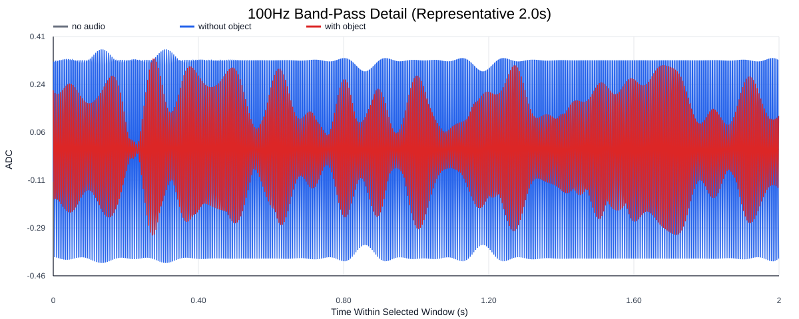
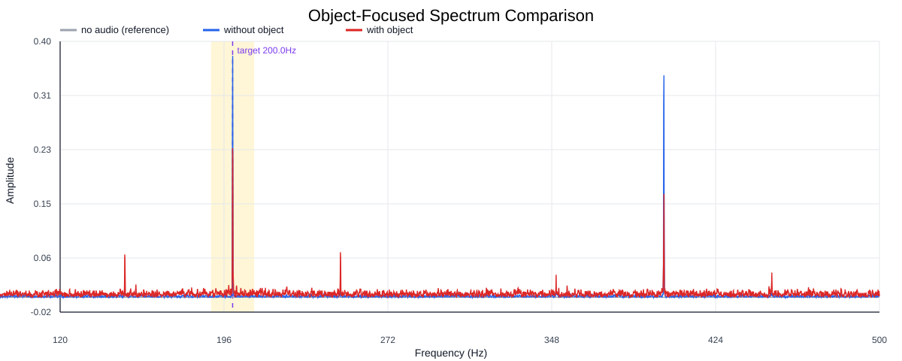
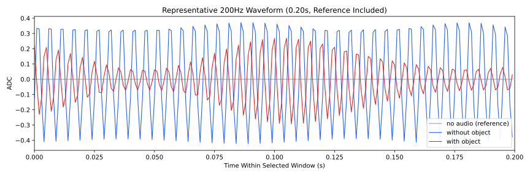
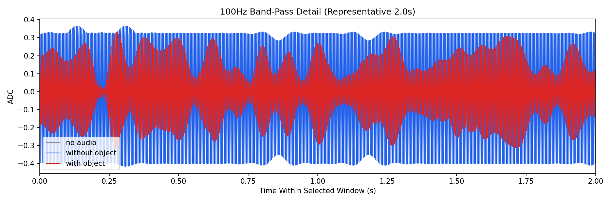
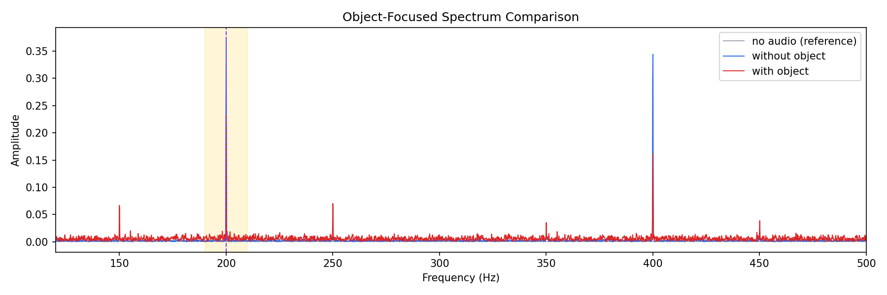
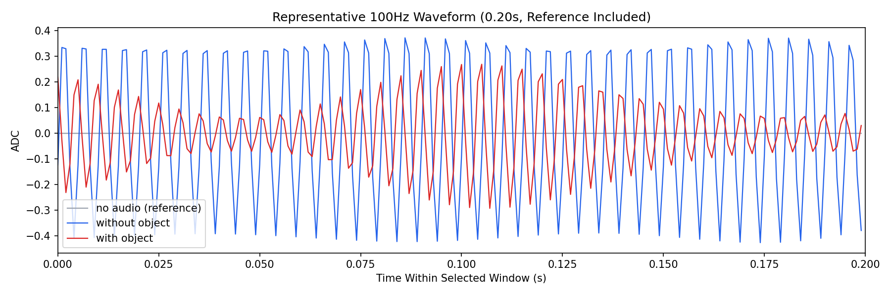

Background: F:\项目类文件夹\异物检测4.10\Data_Dual\frequency_sweep\0200Hz\repeat_03\raw\no_audio.csv
Without object: F:\项目类文件夹\异物检测4.10\Data_Dual\frequency_sweep\0200Hz\repeat_03\raw\without_object.csv
With object: F:\项目类文件夹\异物检测4.10\Data_Dual\frequency_sweep\0200Hz\repeat_03\raw\with_object.csv
| Metric | 无音频 | 100Hz无异物 | 100Hz有异物 | 无异物/无音频 | 有异物/无异物 | 有异物/无音频 |
|---|---|---|---|---|---|---|
| centered_rms | 0.012205 | 0.394426 | 0.369639 | 32.3165 | 0.9372 | 30.2856 |
| raw_target_amp | 0.000570 | 0.374684 | 0.231726 | 657.0409 | 0.6185 | 406.3517 |
| filtered_rms | 0.002660 | 0.271628 | 0.200123 | 102.1065 | 0.7368 | 75.2275 |
| filtered_target_amp | 0.000570 | 0.374684 | 0.231726 | 657.0409 | 0.6185 | 406.3517 |
| filtered_energy_ratio | 0.047507 | 0.474262 | 0.293116 | 9.9830 | 0.6180 | 6.1699 |
| window_filtered_target_amp_mean | 0.000308 | 0.383758 | 0.266173 | 1245.9311 | 0.6936 | 864.1715 |
| window_filtered_target_amp_std | 0.001480 | 0.018132 | 0.059078 | 12.2555 | 3.2582 | 39.9306 |





